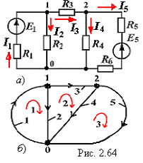

|  |
Топологическую структуру цепи можно описать с помощью узловой и контурной матриц, изобразив направленный граф схемы, в котором ветви представляют в виде линий, проведенных между точками-узлами. Ветвям графа приписывают направления, совпадающие с направлениями токов в ветвях и обозначаемые стрелками.
На рис. 2.64, б представлен направленный топологический граф цепи (с числом ветвей В = 5 и узлов У = 3), изображённой на рис. 2.64, а.
|